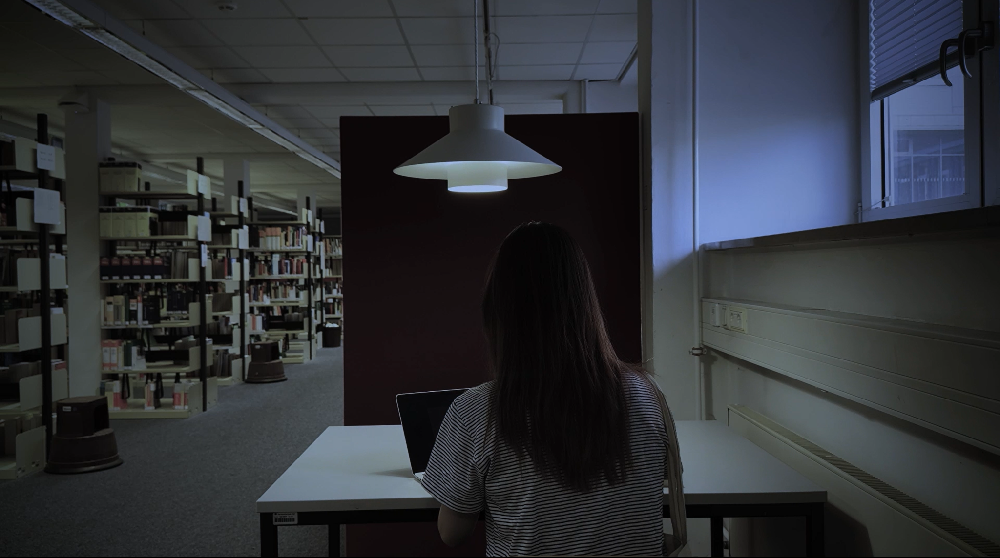

FILM / SHORT HORROR FILM / 2024
Vaterunser
A short horror film inspired by an urban legend from Jakarta, reimagined within a university campus in Germany.
about the project
Vaterunser is a short horror film created during Interdisciplinary Week at FH Kiel in 2024. Inspired by an urban legend from Jakarta, the story reimagines a familiar tale within a university campus setting in Germany.
The project was developed as a collaborative film production, exploring suspense through atmosphere, sound, and visual storytelling.
my contribution
Camera / Sound / Editing
I contributed to the camera work, sound, and post-production editing of the film, including work with Adobe Premiere Pro and After Effects.
colour grading
I worked on the colour grading of Vaterunser to shape a darker, more unsettling atmosphere. Below is a comparison between the original footage and the final graded scene.
